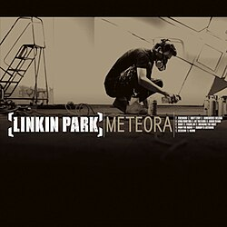
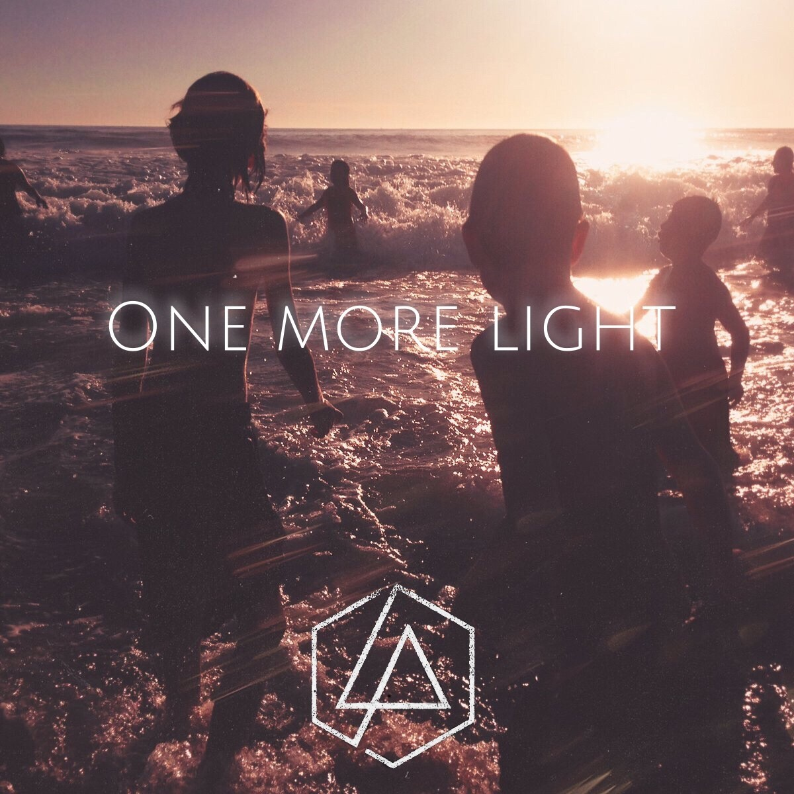

Álbumes de estudio
Linkin Park tiene 8 álbumes de estudio. Cada uno representa una etapa diferente en su evolución musical.
Hybrid Theory (2000)

El álbum debut de la banda. Se convirtió en el álbum debut más vendido del siglo XXI con más de 27 millones de copias. Sus canciones más conocidas son In the End, Crawling y One Step Closer.
Meteora (2003)

Su segundo álbum y uno de los más queridos por los fanáticos. Incluye canciones como Numb, Somewhere I Belong y Breaking the Habit. También vendió más de 27 millones de copias.
Minutes to Midnight (2007)

Con este álbum la banda cambió un poco su estilo hacia el rock alternativo. Canciones como What I've Done y Shadow of the Day tuvieron mucho éxito. "What I've Done" fue incluida en la película Transformers.
One More Light (2017)

El último álbum con Chester Bennington. Tiene un estilo más suave y pop. La canción One More Light se volvió un homenaje a Chester después de su muerte. También incluye Heavy y Battle Symphony.
Tabla de discografía
| Álbum | Año | Canción más conocida | Copias vendidas |
|---|---|---|---|
| Hybrid Theory | 2000 | In the End | 27 millones |
| Meteora | 2003 | Numb | 27 millones |
| Minutes to Midnight | 2007 | What I've Done | 20 millones |
| A Thousand Suns | 2010 | The Catalyst | 5 millones |
| Living Things | 2012 | Burn It Down | 7 millones |
| The Hunting Party | 2014 | Until It's Gone | 2 millones |
| One More Light | 2017 | Heavy | 3 millones |
| From Zero | 2024 | The Emptiness Machine | 57 millones de oyentes mensuales en spotify |